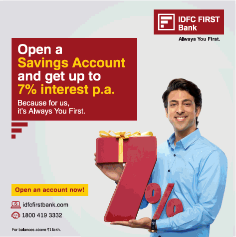
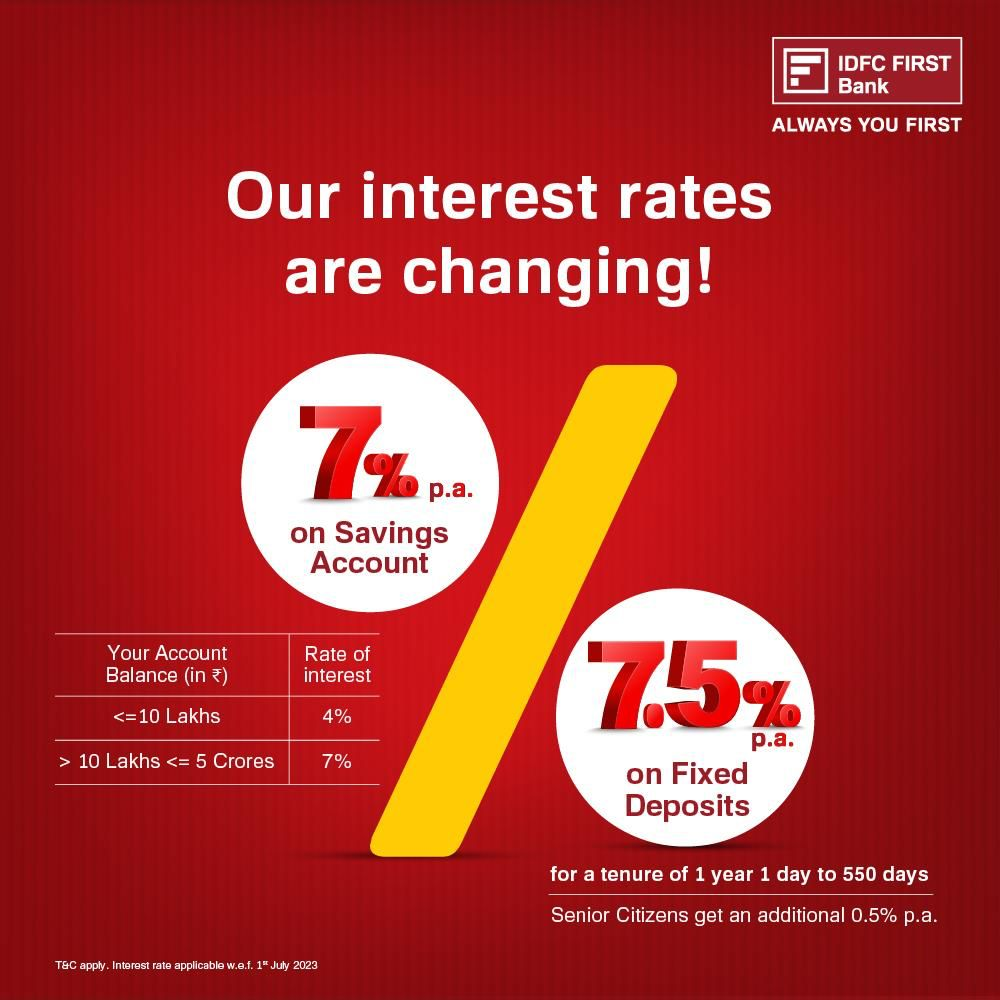
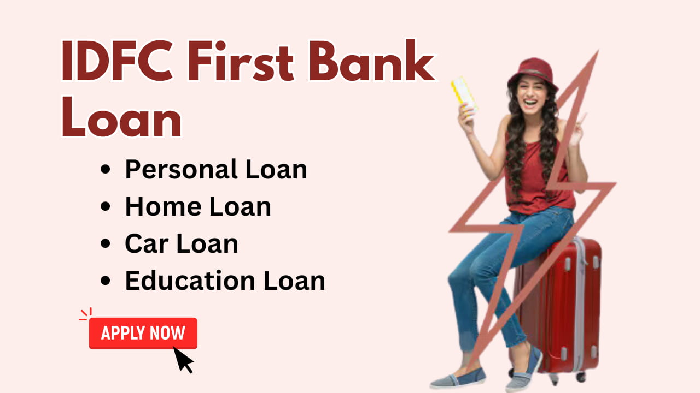
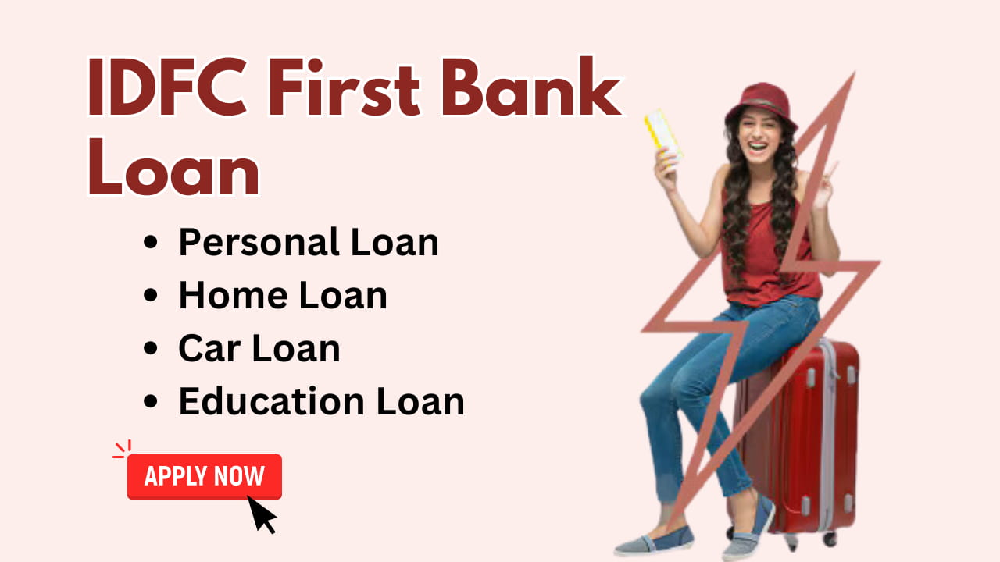
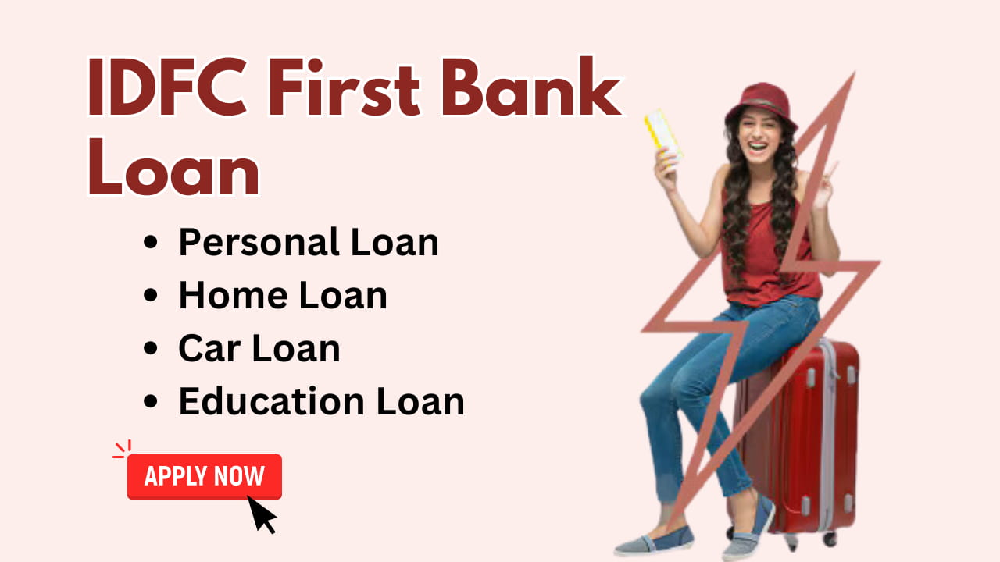

IDFC First Bank, originally known as IDFC Bank, was founded as a part of the Infrastructure
Development
Finance Company Limited (IDFC Ltd.) in 2015. The bank was formed after IDFC Ltd. received a
universal
banking license from the Reserve Bank of India (RBI).
Founders:
==> Dr. Rajiv Lall and V. Vaidyanathan.
Partners:
==> Capital First Ltd and Warburg Pincus.
Some Loans By Bank ::
- Personal Loan Loan Amount: Up to ₹40 lakh. Tenure: 1 to 5 years. Interest Rate: Competitive rates starting from around 10-15% p.a. (can vary based on credit profile).
- Home Loan Loan Amount: Up to ₹10 crore (depending on the property and applicant profile). Tenure: Up to 30 years. Interest Rate: Floating rates starting from around 8-9% p.a
- Car Loan Loan Amount: Up to 100% of the on-road price of the car. Tenure: Up to 7 years. Interest Rate: Starting from 8-10% p.a.
- Two-Wheeler Loan Loan Amount: Up to 95% of the on-road price of the two-wheeler. Tenure: Up to 4 years. Interest Rate: Starting from 10-15% p.a.
- Business Loan Loan Amount: Up to ₹75 lakh. Tenure: Up to 5 years. Interest Rate: Starting from 12-20% p.a.
Services::


 

